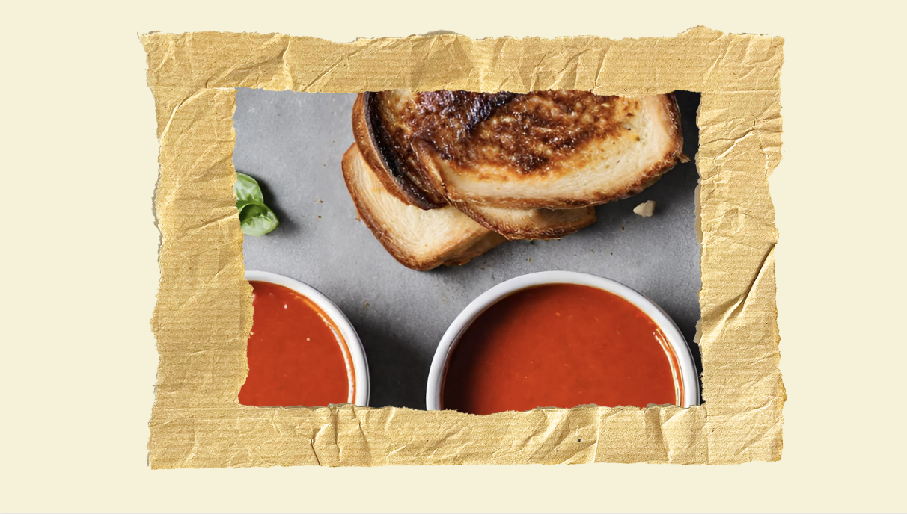

Let’s Eat!" is a vibrant celebration of the significance of amateur cooking, capturing the exhilaration that comes with the world of food.
Jordan Weiner, a business development consultant at Oracle, effortlessly blends his corporate expertise with an unwavering passion for the culinary arts. From his early childhood, Jordan has embraced the art of cooking as an amateur chef, taking pride in his boundless creativity with recipes.
A graduate of James Madison University, where he immersed himself in the intricacies of Sports and Recreational Management, Jordan earned his degree in 2022. Beyond the boardroom, he enthusiastically brings people together through his culinary creations.
Transform your home kitchen into a culinary haven with Jordan's top three recipes. Monthly updates mean you're not just cooking; you're mastering new skills, expanding your culinary repertoire, and elevating your home-cooked meals to gourmet status.
Soy Honey Garlic Salmon with Lemon
Ingredients:
4 salmon fillets
1/4 cup soy sauce
1/4 cup honey
3 cloves garlic, minced
2 tablespoons olive oil
1 tablespoon lemon juice
1 teaspoon grated lemon zest
Salt and black pepper to taste
Chopped fresh parsley for garnish (optional)
Lemon wedges for serving
Instructions:
Preheat the Oven:
Preheat your oven to 400°F (200°C).
Prepare the Marinade:
In a small bowl, whisk together the soy sauce, honey, minced garlic, olive oil, lemon juice, and lemon zest. This will be the flavorful marinade for your salmon
Marinate the Salmon:
Place the salmon fillets in a shallow dish or a resealable plastic bag. Pour half of the marinade over the salmon, making sure each fillet is coated evenly. Let it marinate for at least 15-30 minutes. Reserve the remaining marinade for later.
Season the Salmon:
Sprinkle the marinated salmon with salt and black pepper according to your taste.
Bake in the Oven:
Place the marinated salmon fillets on a baking sheet lined with parchment paper. Bake in the preheated oven for about 12-15 minutes, or until the salmon is cooked through and flakes easily with a fork.
Glaze with Reserved Marinade:
While the salmon is baking, heat the reserved marinade in a small saucepan over medium heat. Bring it to a simmer and let it cook for 2-3 minutes until it thickens slightly
Glaze the Salmon:
Once the salmon is done baking, brush the cooked salmon fillets with the simmered marinade to add an extra layer of flavor and shine.
Garnish and Serve: Transfer the glazed salmon to serving plates. Garnish with chopped fresh parsley if desired. Serve with lemon wedges on the side.
Turkey Smash Burgers
Ingredients:
1 lb ground turkey
Salt and black pepper to taste
1 teaspoon garlic powder
1 teaspoon onion powder
4 burger buns
4 slices of cheese (your choice)
Toppings: lettuce, tomato slices, red onion, pickles, mayonnaise, ketchup, mustard
Instructions:
Preheat the Pan:
Heat a large skillet or griddle over medium-high heat.
Form Turkey Patties:
Divide the ground turkey into 4 equal portions and shape them into patties. Season each patty with salt, black pepper, garlic powder, and onion powder.
Smash and Cook:
Place the turkey patties on the hot skillet and immediately use a spatula to smash them down into thin patties. Cook for about 2-3 minutes per side, or until they are nicely browned and cooked through.
Add Cheese:
In the last minute of cooking, place a slice of cheese on each patty and cover the skillet with a lid to melt the cheese.
Assemble Burgers:
Toast the burger buns. Place each turkey patty on a bun and add your favorite toppings.
Serve: Serve the turkey smash burgers hot and enjoy!

Roasted Tomato Soup
Ingredients:
2 lbs ripe tomatoes, halved
1 onion, quartered
4 cloves garlic, peeled
2 tablespoons olive oil
Salt and black pepper to taste
1 teaspoon dried thyme
4 cups vegetable broth
1/2 cup heavy cream (optional)
Fresh basil leaves for garnish (optional)
Croutons for serving
Instructions:
Preheat the Oven:
Preheat your oven to 400°F (200°C).
Roast Vegetables:
Place the halved tomatoes, quartered onion, and peeled garlic cloves on a baking sheet. Drizzle with olive oil, season with salt, black pepper, and dried thyme. Toss to coat and spread them in a single layer. Roast in the oven for about 30-40 minutes or until the vegetables are caramelized.
Blend:
Transfer the roasted vegetables to a blender or food processor. Blend until smooth.
Simmer:
Pour the blended mixture into a pot. Add the vegetable broth and bring the soup to a simmer over medium heat. Allow it to simmer for 10-15 minutes to meld the flavors.
Add Cream (Optional):
If using heavy cream, stir it into the soup during the last few minutes of simmering. Adjust the seasoning as needed.
Serve: Ladle the roasted tomato soup into bowls. Garnish with fresh basil leaves and serve with croutons on the side.
Welcome to "Jordan's Culinary Picks" – your curated selection of kitchen essentials handpicked by Jordan, a passionate culinary enthusiast. Discover a world of top-notch cooking products that elevate your kitchen experience, all conveniently available on Amazon.
Ninja Airfryer
Jordan's choice for crispy, healthy meals. Available on Amazon.
Savor the distinctive taste of Boston with Jordan's top picks from this iconic city. Indulge in the rich history and diverse culinary traditions that make Boston a food lover's paradise.
Crazy Good Kitchen
Savor the brunch magic of "Chicken & The Egg" – crispy buttermilk fried chicken, tangy tomato relish, American cheese, a fried egg, house ranch.
Maguire's Bar & Grill
Indulge in the perfection of "Jimmy A's Favorite" sandwich— a delightful blend of fresh roasted turkey, homemade stuffing, mayo, and cranberry sauce. Elevate your dining experience with this hometown gem!
Kosmos
Treat your taste buds to the extraordinary with "Astakomakaronada"- Lobster meets the sweetness of corn, the burst of cherry tomatoes, and the zest of lemon yogurt with hilopites pasta.
Harrisonburg Bites:
Jordan's favorites showcase the unique blend of cultures and influences that make Harrisonburg a haven for food enthusiasts.
Lola's
Awaken your taste buds with "Lolas: Angry Bird," a fiery sensation featuring buffalo chicken, melty pepper jack cheese, zesty dill pickles, all embraced by the warmth of sourdough.
Cuban Burger
Satisfy your cravings with "El Cubano," a taste-packed journey featuring succulent roast pork, flavorful smoked ham, melted Swiss cheese, crisp pickles, and a zesty touch of mustard.
Bella Luna
Experience pizza perfection with "Bella Luna: Pesto Verde." Dive into the enticing blend of basil pesto, Castelvetrano olives, mozzarella, and red onions.
Stay Connected
Life is too short to miss out on delicious moments. Subscribe to Jordan's newsletter and ensure you never miss a bite of the culinary action. From weekly newsletters to special editions, each email is a curated feast of inspiration, bringing the best of Jordan's culinary expertise directly to your inbox.